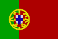

|
Länderinformationen Portugal
1. Das Wichtigste auf einen Blick2. Sehens- und Hörenswertes
3. Politik & Gesellschaft
4. Schmeckenswertes
5. Medien
6. Reisetipps
1. Wissenswertes
|  | Hier
haben wir die wichtigsten Zahlen und Fakten zu Portugal
und der portugiesischen Sprache zusammengetragen. |
Wir freuen uns, dass Sie sich für einen Portugiesischkurs von Sprachenlernen24 entschieden haben. Um Ihnen die Reisevorbereitungen zu erleichtern und Ihnen einen kleinen Vorgeschmack dessen zu geben, was Sie in Portugal erwarten wird, haben wir hier Wissenswertes, Wichtiges, Kurioses, Interessantes, Kulinarisches und noch viele Informationen mehr rund um Portugal, seine Sprache und die Menschen dort für Sie zusammengetragen.
 Portugiesisch
- eine romanische Sprache
Portugiesisch
- eine romanische Sprache
Mit einer kleinen linguistischen Einführung wollen wir Ihnen helfen, das Portugiesische innerhalb der Sprachen der Welt zu verorten: Portugiesisch gehört zu den romanischen Sprachen. Zu den romanischen Sprachen zählen – neben dem Portugiesischen – das Spanische, das Galicische, das Französische, das Italienische, das Katalanische, das Rumänische, das Provenzalische, das Sardische und das Rätoromanische. All diesen Sprachen ist gemein, dass sie (Vulgär-)Latein als Herkunftssprache und verbindenden Bezugspunkt haben. Diese Tatsache rührt daher, dass die Römer als expansionistische Streitmacht nicht nur mit dem Schwert, sondern auch mit ihrer Sprache über die angrenzenden Länder herfielen. Latein – besser: das tatsächlich gesprochene Vulgär-Latein – wurde so zur dominierenden Sprache, die andere ehedem vorherrschende Sprachen verdrängte. So entwickelten sich die oben genannten romanischen Sprachen, die alle auf einem gemeinsamen, dem (Vulgär-)Latein entlehnten, Grundwortschatz basieren.
Die romanischen Sprachen unterteilt man nach regionaler Nachbarschaft und sprachlicher Verwandtschaft in verschiedene Untergruppen. Das Portugiesische zählt – zusammen mit dem Spanischen, dem Katalanischen und dem Galicischen – zu den iberoromanischen Sprachen. Am nächsten verwandt ist das Portugiesische mit dem Galicischen. In der Spätantike und im Frühmittelalter waren beide Sprachen identisch, man bezeichnet diese Sprache als Galicisch-Portugiesisch. Im 11. Jahrhundert dann beginnen die beiden Sprachen sich voneinander wegzuentwickeln und sich zu eigenständigen Sprachen zu formen: Seit dem Jahr 1128 ist Portugal ein unabhängiger Staat und das Portugiesische ist eine der ersten Nationalsprachen, die sich in Europa herausgebildet haben.
Können Sie vielleicht schon Spanisch? – Dann wird Ihnen das Lernen der portugiesischen Wörter dieses Sprachkurses gewiss leichtfallen. Sie waren schon mal in Italien und haben dort so einiges aufgeschnappt? – Sehr gut! Dann werden Sie sicher schnell Parallelen im Portugiesischen finden. Auch wenn Portugiesisch Ihre erste romanische Sprache ist, werden Sie in Zukunft beim Lernen weiterer Sprachen aus dieser Familie immer auf ein Grundwissen an gemeinsamem oder ähnlichem Wortschatz zurückgreifen können. Sie müssen dann nur aufpassen, dass Sie allzu ähnliche Worte nicht verwechseln. – Aber das wird Ihnen schnell nicht mehr passieren, wenn Sie einmal die Eigenheiten der Aussprache einer der Sprachen verstanden haben.
Um oben Erzähltes zu illustrieren, wollen wir Ihnen jetzt von eins bis drei in den meistgesprochenen romanischen Sprachen vorzählen. Schauen Sie sich die Gemeinsamkeiten an!
|
1,2,3 in den romanischen Sprachen |
|||
|
|
eins |
zwei |
drei |
|
Portugiesisch |
um |
dois |
três |
|
Galicisch |
un |
dous |
tres |
|
Spanisch |
uno |
dos |
tres |
|
Katalanisch |
un |
dos |
tres |
|
Französisch |
un |
deux |
trois |
|
Italienisch |
uno |
due |
tre |
|
Rumänisch |
unu |
doi |
trei |
Vielleicht fragen Sie sich jetzt gerade, mit vielen Menschen Sie sich denn unterhalten können, wenn Sie Portugiesisch sprechen? Nun, das sind wirklich sehr viele Menschen, denn Portugiesisch ist eine Weltsprache:
Weltsprache
Portugiesisch
Portugiesisch spricht man auf vier Kontinenten. In Europa wird Portugiesisch von fast elf Millionen Menschen in Portugal gesprochen. Im 14. und 15. Jahrhundert eroberte diese kleine Nation vom Rande der iberischen Halbinsel aus ein Weltreich. Noch heute lassen sich die Spuren der einstigen Bedeutung Portugals ablesen an den Ländern, in denen Portugiesisch gesprochen wird. Portugiesisch ist (neben Portugal) Amtssprache in sieben weiteren Staaten: in Äquatorialguinea, in Angola, in Brasilien, auf den Kap Verden, in Osttimor, in Guinea-Bisau, in Mosambik, auf São Tomé und auf Príncipe. Auch in Asien wird Portugiesisch gesprochen: Bis 1999 war Portugiesisch auf Macao Amtssprache. Auch nach der Rückgabe Macaos an China kann man dort überall auch weiterhin portugiesische Schilder sehen und zum Beispiel findet man auf den Speisekarten neben Englisch und kantonesischen Schriftzeichen auch alle Gerichte auf Portugiesisch beschrieben.
Insgesamt können Sie sich, wenn Sie des Portugiesischen mächtig sind, mit über 210 Millionen Menschen rund um den Globus verständigen. Die meisten davon leben in Brasilien und sprechen eine Variante des Portugiesischen, die sich stark von der unterscheidet, die Sie in Europa und Afrika zu Ohren bekommen.
 Portugiesisch
- eine Sprache, zwei Varianten
Portugiesisch
- eine Sprache, zwei Varianten
Portugiesisch ist eine Sprache, die in zwei sich stark unterscheidenden Varianten existiert. Man unterscheidet das europäische (zusammen mit dem afrikanischen) Portugiesisch vom brasilianischen Portugiesisch. Die Unterschiede zwischen den beiden Varianten sind historisch bedingt: Im 18. Jahrhundert verändert sich das Portugiesisch in Europa nochmals sehr stark, wogegen sich das brasilianische Portugiesisch konservativ verhält und in diesen Veränderungen nicht nachzieht. Immer, wenn Sie in Portugal einen Laut mit [ʃ] oder [ʒ] hören, würden Sie diesen in Brasilien mit [s] oder [z] sprechen. Die Unterschiede beschränken sich aber nicht nur auf die Aussprache, auch in der Rechtschreibung findet man große Unterschiede: In Brasilien werden viele Buchstabenkombinationen vereinfacht geschrieben (z.B. m statt mm oder c statt cç). Und schließlich gibt es auch noch zahlreiche Unterschiede auf grammatischer Ebene, die zu nennen den Rahmen dieser kurzen Einführung sprengen würde.
Mit diesem Sprachkurs werden Sie die europäische Variante, so wie sie in Portugal und den Ländern Afrikas gesprochen wird, lesen, hören und lernen. Aber keine Angst: Portugiesisch-Sprecher der beiden Varianten verstehen einander in der Regel ohne Probleme. Auch wenn Sie sich mit diesem Kurs auf eine Reise nach Brasilien vorbereiten, werden Sie sich dort verständigen können.
 Das
portugiesische Alphabet
Das
portugiesische Alphabet
Die portugiesische Sprache wird mit lateinischen Buchstaben zu Papier gebracht. Hier müssen Sie sich also nicht umstellen, wenn Sie beginnen Portugiesisch zu lernen. Allerdings tauchen im portugiesischen Alphabet nur 23 der 26 Buchstaben auf, die Sie aus dem Deutschen kennen: Die Buchstaben k, w und y kommen im Portugiesischen nur in Fremdwörtern, Eigennamen und Abkürzungen, nicht im übrigen Wortschatz vor.
Womit Sie sich aber auseinandersetzen sollten, sind die Buchstaben mit diakritischen Zeichen: á, â, ã, ã, ç, é, ê, í, ó, ô, õ, ú und ü.
Hier haben wir eine kleine Tabelle mit Aussprachehilfen zu diesen, Ihnen unbekannten Buchstaben zusammengestellt. An dieser können Sie sich orientieren:
|
Aussprachehilfe |
||
|
Buchstabe |
Aussprache |
wird
gesprochen wie in ... |
|
á |
offenes
a: [ɑ] |
butler
(engl.) |
|
â |
geschlossenes
a: [a] |
Apfel
(dt.) |
|
à |
geschlossenes
a: [a] |
Apfel
(dt.) |
|
ã |
nasales
a: [ã] |
não
(port.), blanc (frz.) |
|
ç |
stimmloses
s: [s] |
Hals,
Glas (dt.) |
|
é |
nasales
e: [ɛ] |
teint
(frz.) |
|
ê |
geschlossenes
e: [e] |
Idee
(dt.) |
|
í |
kurzes
i: [i] |
mild
(dt.) |
|
ó |
offenes
o: [ɔ] |
Post
(dt.) |
|
ô |
geschlossenes
o: [o] |
toben
(dt.) |
|
õ |
nasales
o:[õ] |
informações
(port.), on (frz.) |
|
ú |
kurzes
u: [u] |
Bus
(dt.) |
|
ü |
wie
deutsches ü: [ü] |
überlegen
(dt.) |
Aber in diesem kleinen Reiseführer wollen wir Ihnen nicht allein Fakten zur portugiesischen Sprache aufzählen, sondern wir wollen Ihnen vielmehr ein kleines Bild von Portugal zeichnen und Sie auf Ihren Urlaub dort einstimmen. Im Folgenden finden Sie zuerst wichtige Fakten zum Land und seinen Bewohnern, ehe wir Ihnen ausgewählte Reisetipps geben:
 Einwohner
Einwohner
Zur portugiesischen Nation zählen fast elf Millionen Menschen. Portugal ist in 18 Verwaltungsdistrikte unterteilt. Der größte Teil der Portugiesen lebt nördlich am Küstenstreifen, der sich an Spanien anschließt und in und um die Hauptstadt Lissabon.
Zu Portugal zählen auch die beiden autonomen Regionen um die Insel Madeira (im Atlantischen Ozean; vor der Küste Afrikas) und die Azoren-Inselgruppe (mitten im Atlantik; auf halbem Weg nach Amerika). Auf Madeira leben 265.000 Menschen, das sind rund 2,5% der Bevölkerung Portugals. Auf den Azoren leben mehr als 241.000 Menschen.
Bis 1999 zählte auch Macao, die südlich von Hongkong gelegene Halbinsel, zu Portugal. 1999 gab Portugal China die Souveränität über Macao zurück. Seither ist Macao eine Sonderverwaltungszone der Volksrepublik China. Dort kann man aber heute noch überall Schilder und Straßennamen auf Portugiesisch lesen und die älteren Bewohner sprechen noch Portugiesisch - neben Hochchinesisch und Kantonesisch.
 Fläche
Fläche
Die Fläche der República Portuguesa umfasst über 92.000 km². Portugal teilt im Norden und Osten eine 1.200 Kilometer lange Grenze mit Spanien. Im Süden und Westen umschließt der Nordatlantik Portugal.
Die autonome Region Madeira erstreckt sich auf 740 km². Zum Madeira-Archipel gehört neben der Hauptinsel Madeira auch noch die kleinere Insel Porto Santo. Sie ist ebenfalls bewohnt; dort wohnen circa 4.500 Menschen. Neben diesen beiden bewohnten Inseln zählt man auch zwei unbewohnte Inselgruppen (die Ilhas Desertas und die Ilhas Selvagens) zum Archipel.
Die neun Inseln der Azoren verteilen sich im Atlantik über eine Fläche, die fast so groß ist, wie das portugiesische Staatsgebiet auf dem europäischen Festland. Die neun Inseln der Azoren heißen: São Miguel, Santa Maria, Faial, Pico, São Jorge, Terceira, Graciosa, Flores und Corvo.
 Währung
Währung
Seit dem 01.01.2002 bezahlt man in Portugal mit dem Euro. Wie in den Staaten der europäischen Währungszone üblich, prägt auch Portugal die Vorderseiten des Münzgeldes individuell. Auf den 1-, 2- und 5-Cent-Münzen zeigt die Vorderseite einheitlich das königliche Siegel von Dom Alfonso Henriques (Alfons I.) - dem ersten König Portugals - aus dem Jahre 1134. Auf den 10-, 20- und 50-Cent-Münzen finden Sie Dom Alfonso Henriques Königssiegel aus dem Jahre 1142. Die 1- und 2-Euro-Münzen zeigen das Siegel, das der König zwei Jahre später (ab 1144) verwendete.
 Ökonomische Situation
Ökonomische Situation
Die Wirtschaft Portugals hat in den vergangenen 30 Jahren eine enorme Erfolgsgeschichte erlebt. Nachdem anfangs alle Zeichen dagegen sprachen, konnte Portugal die Konvergenzkriterien der Wirtschafts- und Währungsunion erfüllen und zählte 2002 zu den ersten der zwölf Länder, die den Euro einführen konnten. Aber noch immer hat Portugal mit einigen Problemen zu kämpfen: Die Infrastruktur des Landes muss verbessert werden um eine solide Grundlage für einen anhaltenden wirtschaftlichen Aufschwung zu bilden. In den letzten Jahren konzentriert sich die Politik darauf, das Bildungssystem zu verbessern, die Wirtschaft zu modernisieren und den Verwaltungsapparat zu verschlanken und effizienter zu machen.
Der Dienstleistungssektor hat in Portugal, wie in vielen anderen EU-Ländern auch, den größten Anteil am Bruttoinlandsprodukt. Allein der Tourismus stellt zehn Prozent des Beitrags am BIP. Nach Portugal reisen jeden Jahr über 10 Millionen Menschen. Die meisten von ihnen kommen aus Spanien und Großbritannien. Aber auch immer mehr Deutsche zieht es jeden Sommer an die Algarve im Süden Portugals.
Die Landwirtschaft ist der Sektor der portugiesischen Wirtschaft, der dem Land die meisten Probleme bereitet: etwa ein Drittel der Erwerbstätigen arbeitet in der Landwirtschaft. Die Landwirtschaft aber kann nur knapp fünf Prozent zum Bruttoinlandsprodukt beitragen. Angebaut werden in Portugal vor allem Kartoffeln, Mais, Oliven, Orangen, Trauben, Tomaten, Wein und Weizen. Portugal ist einer der größten Produzenten von Wein und Olivenöl Europas. Auch die Korkproduktion war bislang immer ein wichtiger Teil der portugiesischen Landwirtschaft. Portugal ist der weltweit größte Produzent von Kork, sei es für den Verschluss von Weinflaschen oder zur Herstellung von Bodenbelägen und Tapeten. Aber die Korkindustrie im Alentejo steht vor immer größeren Absatzproblemen. Und so werden viele Flächen mittlerweile für den Anbau von Eukalyptus genutzt, der zur Herstellung von Papier verwendet wird. Dies zieht aber große Umweltprobleme nach sich: Eukalyptus laugt den Boden aus und nach dem Abernten einer Eukalyptusplantage kann man die Böden über mehrere Jahre hinweg kaum nutzen. Außerdem brennt diese Pflanze leicht und sehr schnell. Somit erhöht sich die Häufigkeit und die Heftigkeit der Waldbrände in Portugal weiterhin.
Exportschlager der portugiesischen Wirtschaft sind neben Kork, Olivenöl und Wein, Maschinen und Fahrzeuge, Textilien sowie Bekleidung und Schuhe. Importiert werden in erster Linie Arbeitsgeräte, chemische Produkte, Öl und Nahrungsmittel.
Zeitzone
Wenn Sie nach Portugal reisen, müssen Sie aus der Schweiz, aus Österreich und aus Deutschland kommend Ihre Uhren um eine Stunde zurückstellen. In Portugal gilt auch eine Sommerzeit: Im Frühsommer stellt man die Uhren um eine Stunde vor und im Herbst stellt man diese eine Stunde wieder zurück. Auf Madeira gilt die gleiche Zeit, wie auf dem portugiesischen Festland. Die Azoren aber gehören einer anderen Zeitzone an. Auf allen Inseln der Azoren müssen Sie Ihre Uhr – wenn Sie aus Österreich, der Schweiz oder Deutschland anreisen – um zwei Stunden zurückstellen.
Nach diesem Kapitel über Sprache und Land, möchten wir Sie im nächsten Abschnitt einladen zu einer kleinen Reise durch Portugal. Dort haben wir einige ausgesuchte Reiseziele versammelt und stellen Ihnen Sehens- und Hörenswertes vor.